Aquest aplicació permet estudiar el comportament de sistemes òptics, com ara lents, projectors, telescopis, etc. Inclou tant el càlcul de les seves característiques (elements cardinals) com la formació d'imatges, sigui amb les aproximacions de l'òptica paraxial o amb fórmules exactes. Això permet visualitzar i analitzar les aberracions òptiques del sistema.
En aquesta finestra es pot definir l'avantprojecte del sistema òptic que volem estudiar, i es mostra el seu comportament per mitjà de l'aproximació de l'òptica paraxial. En la part superior es mostra el traçat de raigs en l'esmentada aproximació per als objectes seleccionats (fins a un màxim de dos) en travessar les lents i diafragmes que s' hagin afegit al sistema (fins a 6).
El programa permet estudiar el traçat de raigs d'un o dos objectes en eix i/o formant un cert angle amb l'eix òptic (en camp). Si es prem el botó "Objecte 1" o "Objecte 2" apareixen una sèrie de barres de desplaçament que permeten canviar les característiques de l'objecte seleccionat: aquest pot ser real o virtual, i es pot escollir la seva posició horitzontal respecte a l'origen del sistema de coordenades (en situar la barra de desplaçament a l'esquerra de tot, l'objecte desapareix). Mentre la barra de desplaçament "Semicamp" tingui un valor nul, el programa mostra únicament el traçat de raigs de l'objecte en eix (en color verd o groc segons si és l'objecte 1 o el 2, respectivament). En canviar el valor del "Semicamp", s'afegeix un objecte amb el semicamp escollit (en blau per a l'objecte 1 i en taronja per al 2).
El programa permet afegir al sistema fins a sis elements, que poden ser lents o diafragmes. Prement un dels botons numerats de l'1 al 6, s'escullen les característiques de l'element en qüestió:
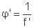
Quan la focal f' s'expressa en metres, la potència φ' ve donada en diòptries. Per a lents convergents, f' i φ' són positives, i negatives per a lents divergents. D'altra banda, totes les lents tenen un diàmetre per defecte de 70 mm i estan centrades respecte a l'eix òptic.
Un cop dissenyat el sistema (s'han afegit lents, diafragmes i objectes), la semifinestra superior mostra el traçat de raigs corresponent. Cal recordar que, en òptica paraxial, la llei per a la formació d'imatges és la llei de Gauss: donat un objecte que es troba a una distància s (distància objecte) d'una lent de focal f', la seva imatge es formarà a una distància s' (distància imatge) de la lent, on:
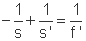
En aquesta fórmula (i en les següents) se suposa que la lent es troba en un medi d'índex de refracció igual a la unitat. Les lents es consideren primes, de manera que les distàncies es mesuren des de la seva superfície. A més, el conveni de signes utilitzat indica que les distàncies són positives per a objectes/imatges a la dreta de la lent, i negatives en cas contrari.
Per exemple, la imatge d'un objecte a l'origen a través d'una lent de focal f'=200 mm, situada a 600 mm de l'origen, és:
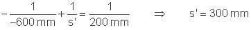
És a dir, es forma 300 mm a la dreta de la lent, cosa que correspon a una posició absoluta de 900 mm respecte a l'origen.
Si ara considerem un objecte fora d'eix, l'augment lateral del sistema (β'), que és la relació entre la mida de la imatge (y') i de l'objecte (y), ve donada per:
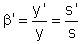
En l'exemple anterior:
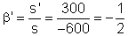
És a dir, si es considera un objecte amb un semicamp de 4º, amb una mida
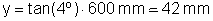
per sobre l'eix (positiu), la seva imatge tindrà una mida:
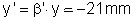
És a dir, estarà invertida i serà la meitat de petita que l'objecte.
En el cas que el sistema estigui constituït per més d'una lent (sistema compost), cal considerar la formació d' imatge a través de cadascuna de les lents, l'una darrere l'altra:
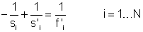
Els subíndexs fan referència a la formació d'imatge a través de la lent i de focal f'i (se suposa que hi ha N lents), per a un objecte situat a una distància objecte si. La relació entre la distància imatge respecte a la lent i, s'i i la distància objecte respecte a la lent següent, si+1, és:
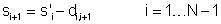
on di,i+1 és la distància entre les dues lents (posició de la lent i+1 respecte a la lent i), que serà positiva si la lent i+1 és a la dreta de la lent i.
Els augments del sistema compost poden obtenir-se com el producte dels augments laterals de cadascuna de les lents:
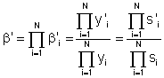
El programa mostra, en tots els casos, la posició i mida del diafragma d'obertura (D.A.), de la pupil·la d'entrada (P.E.) i de la pupil·la de sortida (P.S.) del sistema. El diafragma d'obertura d'un sistema òptic és l'element (forat) que limita l'extensió del feix que hi incideix procedent de l'objecte, situat en l'eix òptic. La imatge del diafragma d'obertura en l'espai objecte i en l'espai imatge s'anomena pupil·la d'entrada i pupil·la de sortida, respectivament.
D'altra banda , tant els objectes en estudi com les seves corresponents imatges a través del sistema poden ser reals (els raigs de llum convergeixen i es tallen realment en un punt) o virtuals (els perllongaments dels raigs es tallen en un punt). En aquest darrer cas, els raigs convergeixen cap a un punt o divergeixen des d'un punt. Per conèixer-ne la posició exacta, cal prémer el botó "Veure objecte virtual" o "Veure imatge virtual", i el traçat de raigs mostra el perllongament dels raigs amb una línea de punts, fins al punt en qüestió (posició de l'objecte o de la imatge virtual, segons el cas).
Si es prem el botó "Elements cardinals", apareix a la part inferior el traçat de raigs necessari per trobar els elements cardinals del sistema, que són els focus i plans focals (en vermell) i els plans i punts principals (en magenta).
Si es té una única lent, que se suposa prima, els plans principals objecte i imatge coincideixen amb la pròpia superfície de la lent, i la posició de F i F' es determina fàcilment a partir de les seves focals objecte i imatge:
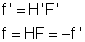
Les distàncies focals objecte i imatge són iguals i de signe contrari perquè estem suposant que els índexs de refracció abans i després de la lent coincideixen.
Per a un sistema compost per dues lents de focals f'1 i f'2 immerses en el mateix medi, les focals i posicions dels plans principals del sistema es calculen segons:
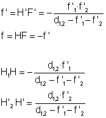
on d1,2 és, en l'aproximació de lents primes, la distància entre la lent 1 i la 2 (positiva si 2 és a la dreta de 1). H1 i H'2 són el pla principal objecte de la primera lent i imatge de la segona lent, respectivament, i coincideixen amb les seves superfícies.
En aquest apartat s'estudia la formació d'imatges a través d'un sistema òptic sense considerar les aproximacions de l'òptica paraxial, que deixen de ser vàlides quan els camps i les obertures del sistema no són petits. En aquest cas, les imatges presenten una sèrie de defectes, coneguts amb el nom d'aberracions (la imatge d'un punt ja no és un punt).
El programa mostra l'aspecte de la imatge real a través del sistema, tant en eix como en camp. Prement el botó "Imatge" se'n poden canviar les característiques: la distància des del pla paraxial fins al pla imatge que es vulgui estudiar i l'escala de la finestra de visualització. El programa mostra la posició del pla paraxial, on es formaria la imatge segons les aproximacions de l'òptica paraxial.
Per defecte (imatge "monocromàtica"), la imatge es calcula per una única longitud d'ona,
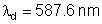
(verd). En aquest cas es poden estudiar les aberracions de punt (esfèrica, coma i astigmatisme). El programa calcula una funció de mèrit tant en eix com en camp, que està relacionada amb la "qualitat" de la imatge. Si s'activa el botó "Color", apareixen també les imatges per
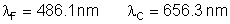
en els corresponents colors (blau i vermell, respectivament), cosa que permet estudiar l'aberració cromàtica.
En aquest apartat, el programa permet retocar les característiques de l'objecte (posició i camp), de les lents i dels diafragmes (posició i diàmetre). El cas de les lents requereix especial atenció: com que el càlcul és exacte, a més de la posició i la potència de les lents, és possible canviar els radis de les seves superfícies externes i el seu índex de refracció. Per a una focal o potència fixa, es pot veure com les aberracions canvien amb els radis. A més, per a imatges en color, es pot modificar l'índex de refracción nd (per la longitud d'ona λd) de les lents i el nombre d'Abbe, definit com:
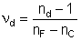
on nF i nC són els índexs de refracció per λF i λC, respectivament. El nombre d'Abbe caracteritza la dispersió cromàtica de la lent.
El programa recupera les dades de l'Avantprojecte enregistrades prèviament en un fitxer (vegeu apartat següent).
En prémer aquest botó, el programa grava en un fitxer les característiques del sistema òptic dissenyat en l'Avantprojecte (objectes, lents i diafragmes), de manera que es puguin recuperar posteriorment.
| Avantprojecte | Càlculo exacte (lent) | ||
| Potència | φ' | Índex | nd |
| Focal | f' | Abbe (nombre d'Abbe) | νd |
| Diafragma d'obertura | D.A. | ||
| Pupil·la d'entrada | P.E. | ||
| Pupil·la de sortida | P.S. | ||
| Pla principal objecte | H | ||
| Pla principal imatge | H' | ||
| Focus objecte | F | ||
| Focus imatge | F' |